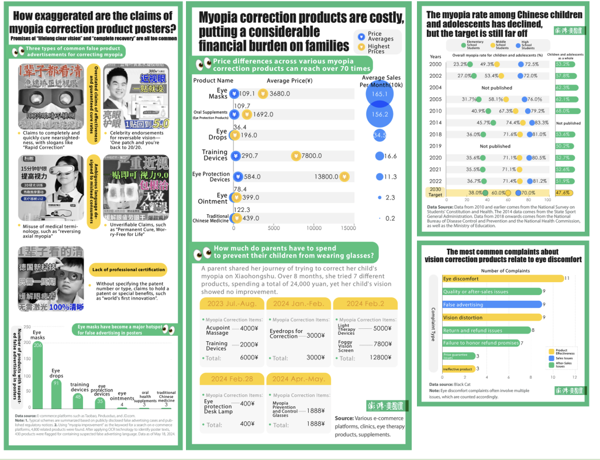
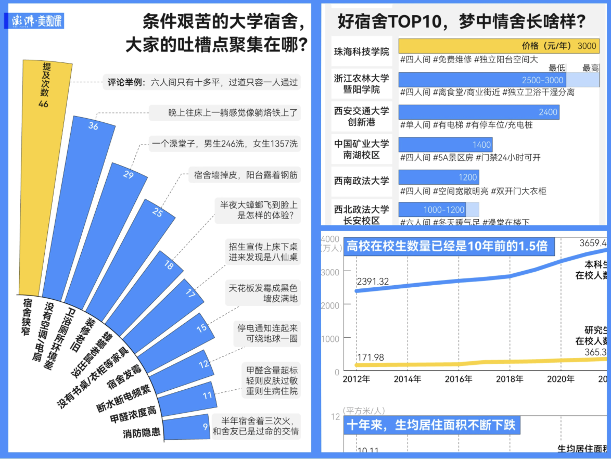
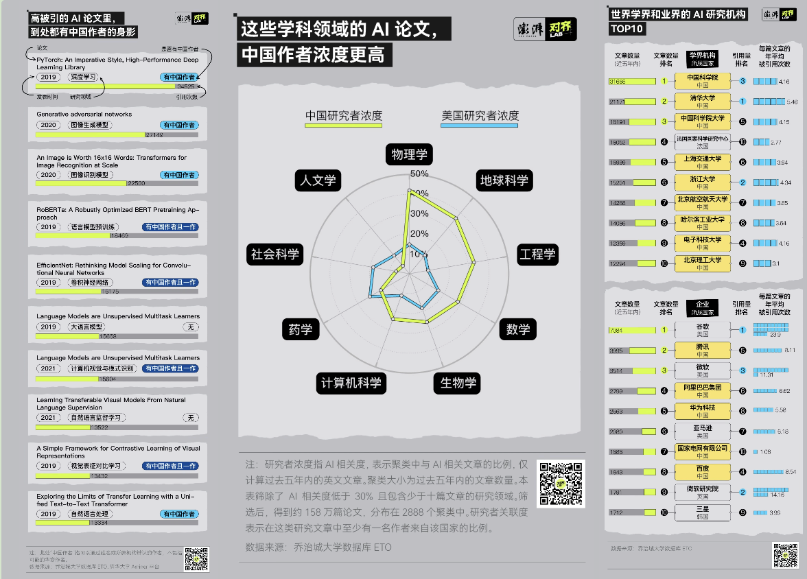
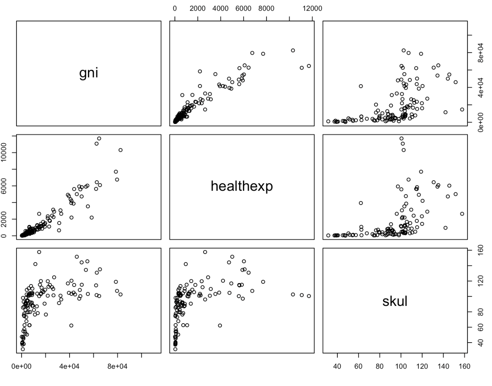
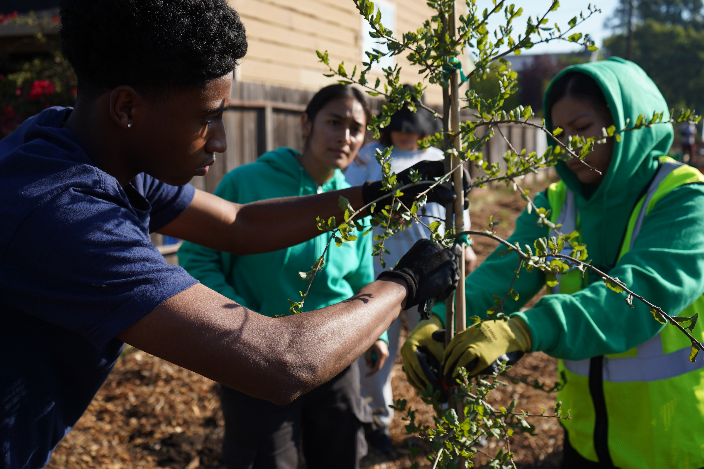
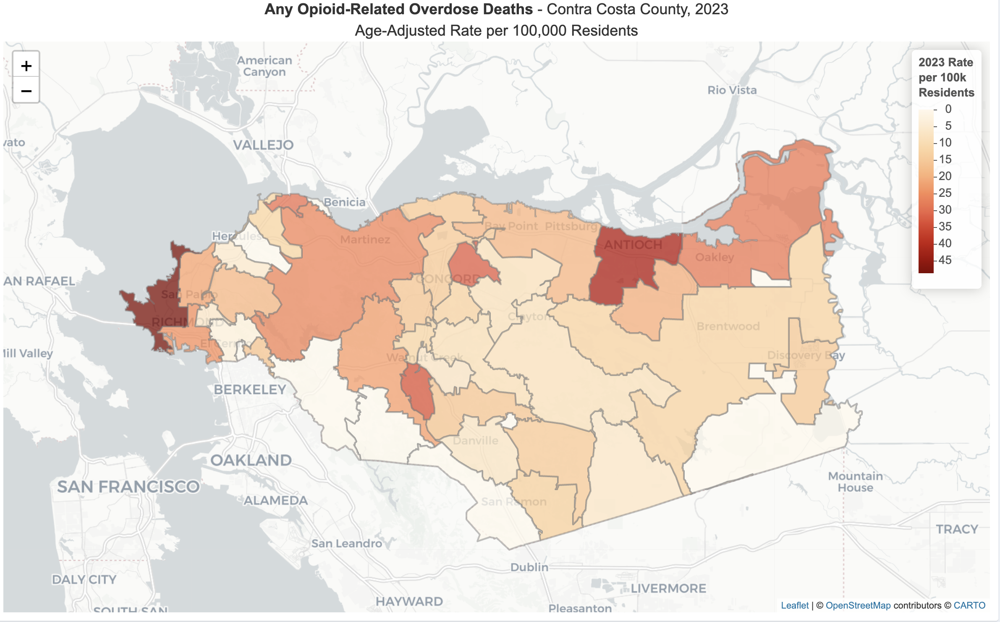

Scrollytelling

The Struggles of Medical Residency Trainees
Data-driven investigation into China's mental health crisis among young medical
residents — revealing how long hours, low pay, and identity crises push trainees to the brink.
I built the full story from the ground up: scraped and analyzed national data, designed all interactive visualizations, and coded the narrative web experience end-to-end.
I built the full story from the ground up: scraped and analyzed national data, designed all interactive visualizations, and coded the narrative web experience end-to-end.
HTML/CSS/JS
D3.js
Github
Python
ECharts
Flourish
After Effects
Premiere Pro

US VISA Curbs On International Students May Hurt Colleges
New international enrollment dropped 17% in fall 2025. I analyzed four federal
datasets — Open Doors, SEVIS, I-94 arrivals, and Common App — to explore the stories behind the
numbers, students stuck waiting for visa slots that never opened, and universities bracing for a
$1.1 billion loss...
I designed the visual identity in Figma, coded the full site, and managed version control and deployment via GitHub.
I designed the visual identity in Figma, coded the full site, and managed version control and deployment via GitHub.
HTML/CSS/JS
Github
Datawrapper
Flourish
Figma

How to Bid Farewell with Love and Dignity at Life's Final Station?
A multimedia investigation into palliative care in China's aging society —
tracing families navigating pain, loss, and acceptance, while policy and infrastructure lag behind
the need for dignity at the end of life.
Readymag
Flourish
Excel
Procreate
Data Visualization

The Paper, 澎湃新闻 · June 6, 2024
Uncovering the Truth Behind 4,000 E-Commerce Myopia Correction Products
I analyzed over 4,000 e-commerce listings and consumer complaints to uncover
how sellers hide false claims in banner images, revealing how misleading advertising continues to
thrive in China’s myopia prevention market despite regulatory crackdowns and endangers families with
short-sighted children.
Python
Octoparse
Excel
Adobe Illustrator

The Paper, 澎湃新闻 · September 4, 2024
Why College Dorms in China Get So Many Complaints?
I analyzed 9,000 dorm reviews from the WAVE platform and national education
data to explore why Chinese university students keep complaining about their dorms. I found that
overcrowding, outdated facilities, and slow renovation have worsened as enrollment expands.
Comparing dorm costs and conditions across major universities also revealed how affordability limits
upgrades and widens inequality between schools.
Python
Fiddler
Fourish
Excel
Adobe Illustrator

The Paper, 澎湃新闻 · July 4, 2024
What 2.78 Million AI Papers Reveal About China’s Role in Global
Research
I examined 2.78 million global AI papers from multiple academic databases to
show that China now leads the world in both publication volume and citation impact. Chinese
institutions dominate global rankings and Chinese researchers contribute to most of the world’s
highly cited papers in AI. Yet a large share of that work is conducted overseas, suggesting China
still faces challenges in retaining top research talent.
Python
Fourish
Excel
Adobe Illustrator
Data Analysis

Richmond's Tree Canopy Gap
Analyzed 35,584 geolocated tree records to map canopy gaps across
neighborhoods, revealing how the least-covered areas overlap almost entirely with low-income
communities and communities of color.
PythonDatawrapperGIS mappingGoogle Sheets

Learning R for
Data Analysis in Journalism
I officially started to learn R in 2026 Spring (self taught a little bit
before). This is the notes from
course J298 Reporting Inequality with Data at UC Berkeley's Graduate School of Journalism.
R
Writing

Richmond Confidential · December 8, 2025
Richmond stopped keeping track of its trees, but a grant-funded plan
is in place to change that.
Richmond's last tree inventory was 12 years ago. Since then, no one knows
exactly how many trees the city has. A $1 million grant will change that, funding a new citywide
census, management software, and a 10-to-20-year canopy plan.
PythonDatawrapperField Reporting
Richmond Confidential · October 20, 2025
Arbor Day in Richmond: 50 volunteers plant 29 trees
On Richmond’s 14th annual Arbor Day, about 50 volunteers joined Groundwork
Richmond to plant 29 trees along the city’s Greenway. The event is part of a five-year plan to
restore green spaces and train local youth in environmental jobs.
Field ReportingPhotographyPublic Records

Richmond Confidential · October 17, 2025
The Opioid Crisis Next Door: How Richmond Is Responding
Richmond's overdose death rate stands at 48.8 per 100,000 — nearly double the
state average. For the first time, all of the city's emergency, public health, and community
organizations gathered under one roof to confront a crisis that quietly takes dozens of local
lives each year.
Field ReportingPublic
Records